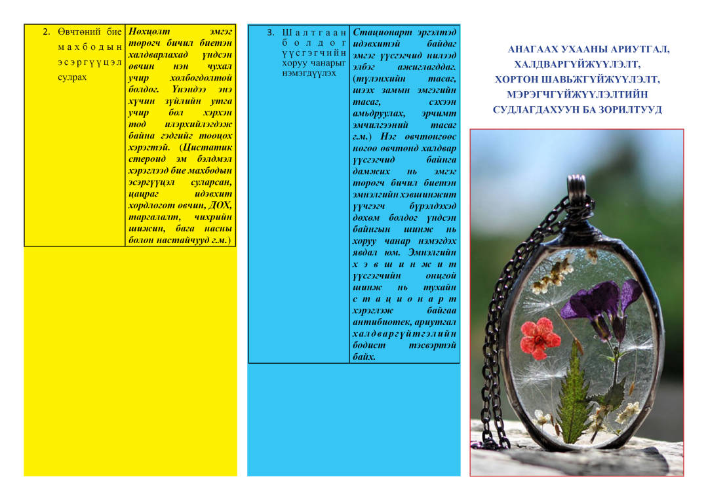
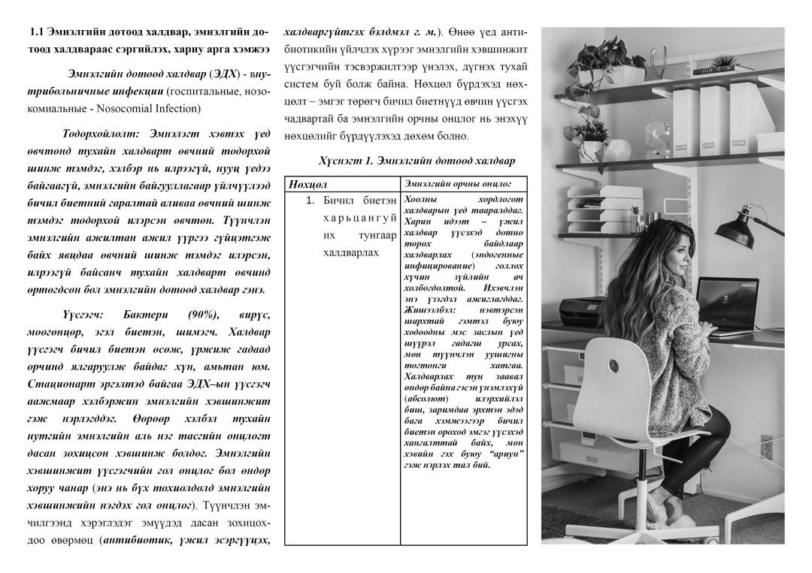
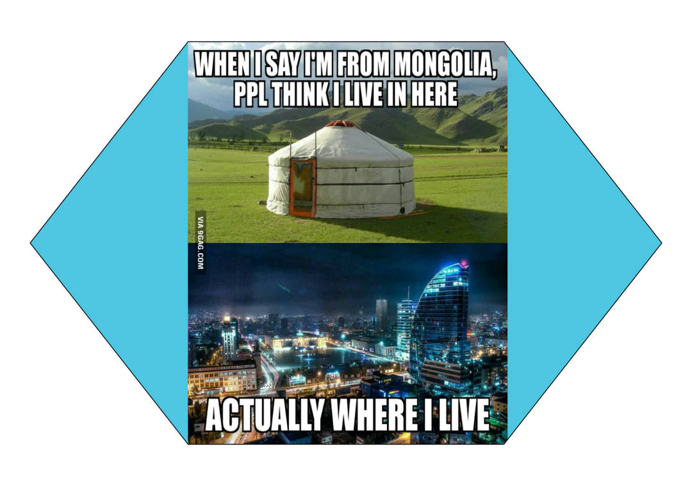
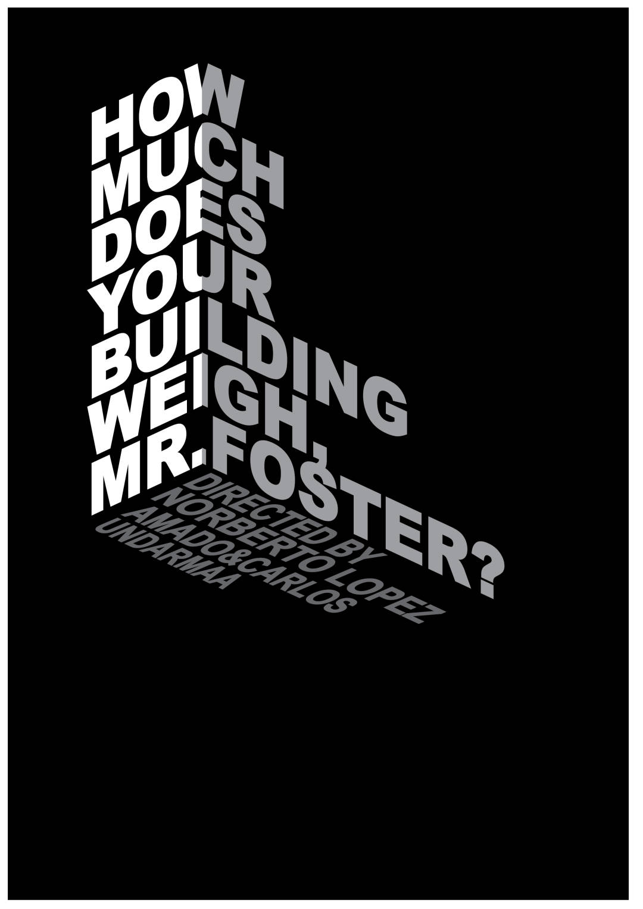
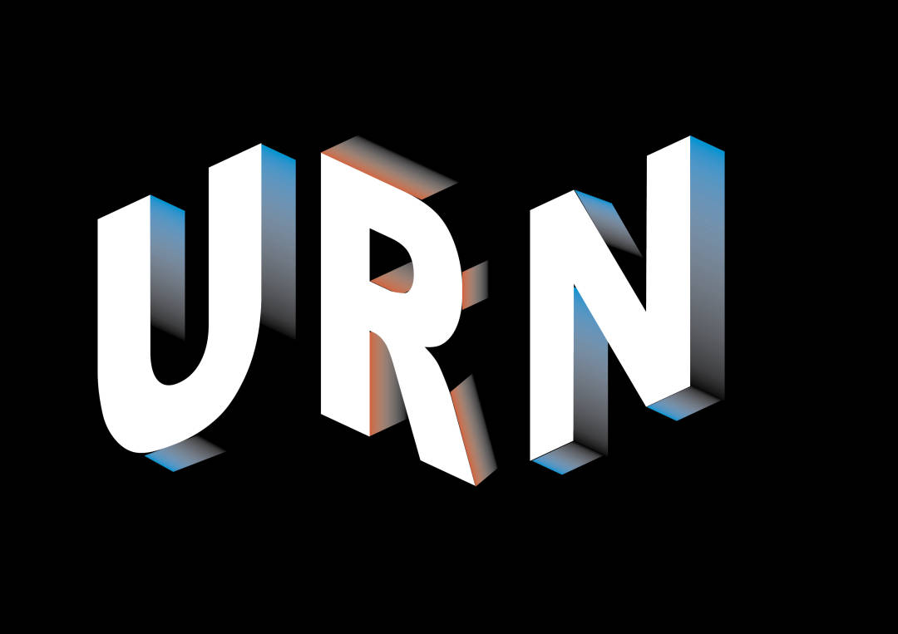
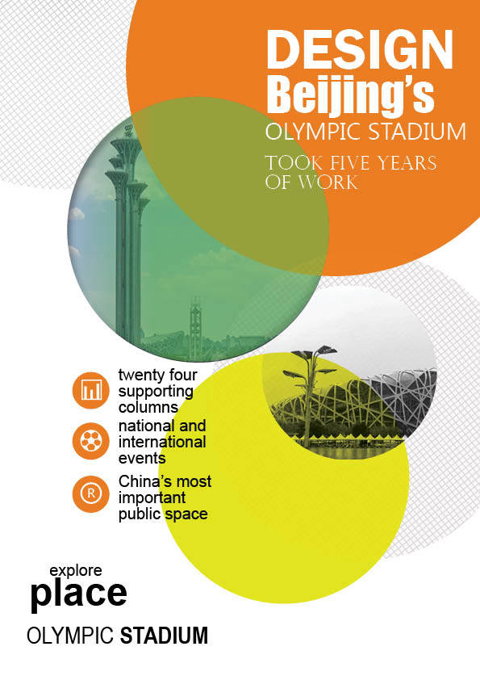

Бид юу сурч судалсан бэ?
Previous
Next
Adobe illustrator-аар зурсан
Пүрэвсүх багш маань бидэнд маш олон зүйл заасан боловч бид ихэнхийг нь тогтоож чадалгүй мартсан бололтой. Нэг бүтэн жил гэдэг бол маш урт хугацаа юм байна. Маш их зүйлийг сурч болохоор хугацаа юм байна.


Adobe indesign-ийг ашиглаж брошур хийж сурсан байна



